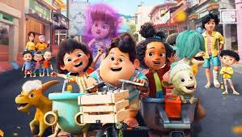

Daftar Blog

Review Film Inside Out 2 (2024) – Dunia Emosi yang Semakin Rumit
Konfliknya dimulai ketika Anxiety mengambil alih “ruang kontrol” karena khawatir masa depan Riley akan berantakan. Dari sini, film ini berhasil menyajikan drama emosional yang lucu, haru, sekaligus relatable.
Baca Selengkapnya
Review Film The Conjuring 2 - Horor Supernatural yang Mencekam
The Conjuring 2 merupakan sekuel dari film horor populer The Conjuring (2013), yang kembali menyajikan kisah nyata dari paranormal terkenal Ed dan Lorraine Warren.
Baca Selengkapnya

Review Filim Jumbo - Unik, Emosional, Memikat
Film ini mampu menyentuh perasaan penonton sekaligus memikat lewat visual yang kuat dan akting yang realistis.
Baca Selengkapnya